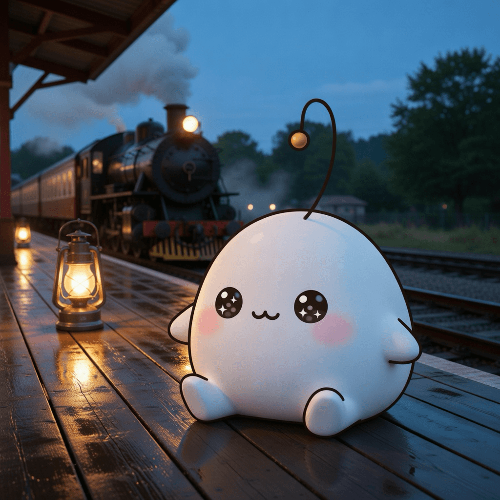

August 28, 2026
August 28, 2026

Inspiration
Europe's last regular standard-gauge steam passenger service
A scheduled steam train that never became a museum piece — still leaving on time, still carrying strangers on ordinary errands. The everyday made holy by sheer persistence.
GUIs should be fully keyboard-driven
A quiet manifesto for deliberate interaction — each keystroke a considered step instead of a lazy default. Moving slowly on purpose is a discipline of its own.